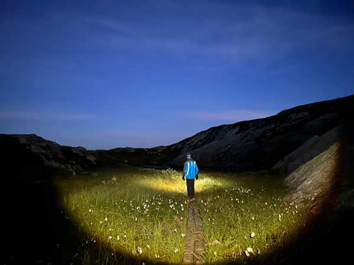
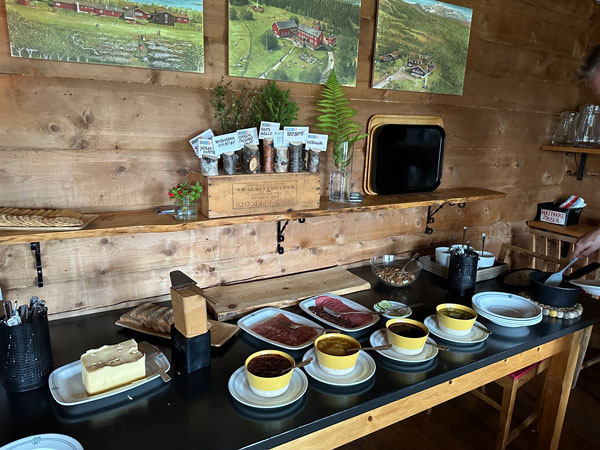

During the summer of 2023 I talked my husband Magnar into walking 125 kilometers across his home country of Norway. He attempted to talk to me down to a more reasonable plan, but the moment the idea was in my mind there was no turning back. I was relentless enough to joke that I bullied him into the journey and I am so glad that I did, because it's one of the most incredible things I've ever done.
We debated if we should hike or run the distance and ultimately the weight of our backpacks solved this debate. Since neither of us had ever done this before, we packed nearly everything we could possibly need out of an abundance of caution. In addition to clothes for all weather and hygiene items, we had a portable stove, dehydrated meals, water, snacks, headlamps, waterproof bags, and a seating pad and rain cover to sit under for meals when it was raining. It felt like it was always raining.
Most locals hike from Trondheim to Sweden, but we decided to go backward and hike home. Trondheim has a fantastic program that will, for the price of a regular city public transit bus ticket, transport hikers via bus followed by taxi across Norway to the first cabin on the journey. The first cabin is about 6 kilometers from the Swedish border. The first 12 kilometers to Sweden and back to the cabin was treacherous at night on wet rocks and at one point there was a steep drop-off that terrified me. It was night one that I realized I wore the wrong shoes, but I was not about to be reasoned with. I planned to walk across Norway no matter what.
The Journey Across Norway
Day One - Making our way to Sweden
Distance: 12km

Our first day involved a bus and taxi ride from Trondheim across Norway to Nedalshytta, a cabin 6 kilometers from Sweden. We then hiked to Sweden and back to the cabin at night. This stretch proved to be the second most difficult portion of the journey. Although we were rained on all week, it was night one that I realized my "all terrain" Hokas were definitely more of an all terrain when dry sort of shoe. My shoes were like a heavy collection of slippery, soaked kitchen sponges making the hike exhausting and more dangerous than necessary.
We did not return to the cabin until after 2am where we ate dehydrated bag meals for dinner. This was my first stay in a Norwegian cabin. We were lucky to have a room to ourselves, but had to stay quiet as we did share the cabin with other visitors.
Day Two - Nedalshytta to Storerikvollen
Distance: 26km
At Nedalshytta I experienced my first Norwegian cabin breakfast. The dining room was bustling with families. Cabin staff thoughtfully put out some oatmilk chocolate spread for me and there were plenty of veggies to munch on. Along side the generous breakfast spread, there were supplies to make a packed lunch (matpakke) with the leftover breakfast items to take along the hike. I packed a sack of fresh vegetables and made myself sandwiches with the chocolate spread and various jams available. I tied the bag to my backpack and ate while walking so we didn't have to stop every time I needed an energy boost.
This was the most beautiful weather day of the journey. Although it was chilly out, the skies were clear and our legs were still relatively fresh. This stretch was much easier than the night before.
We spotted multiple packs of reindeer throughout the day and I walked across the scariest bridge of the trip. And there were plenty of terrifying bridges. Once we reached Storerikvollen, after warming myself by the fire inside, I befriended a flock of sheep. Masses of friendly animals happen to me more often than you'd think (until you get to know me)!
Day Three - Storerikvollen to Ramsjøhytta, then Schulzhytta
Distance: 33km
I was a bit downtrodden from being cold and wet by the time we made it to Ramsjøhytta. We only stopped in briefly to dry our things over a fire and eat some bag meals before heading out. Another guest at the cabin had her dog with her and I asked if I could hang out with the dog for a while which lifted my spirits quite a bit.
The night ahead of us was rough and I felt like we were "almost there" for hours climbing on slippery rocks and through deep, cold water streams in the dark with only headlamps to light the way. Everything was flooded and by the time we reached Schulzhytta it was after midnight. Even in proper rain gear, my clothes were soaked through to my undergarments and I had been cold for hours. I immediately took off my mud-covered clothes and sat by the fire in the drying room to dry out with the clothes.
There were no other guests at Schulzhytta and although the staff was technically off for the night, they were absolutely shocked to see guests arrive in the bad weather in the middle of the night. So they went above and beyond and prepared an extraordinary meal for us which we ate by candlelight. I don't think I have ever appreciated a hot meal and hospitality this much in my entire life.
Day Four - Rest Day at Schulzhytta
Distance: 0km (resting day)

We were welcomed to a lovely breakfast spread all to ourselves and spent much of the day enjoying the spacious cabin as other visitors trickled in. We shared our dinner table with a group of young men who were hiking the same path in the opposite direction. We exchanged stories and tips and I commiserated with a guy in their group who also wore heckin spongy shoes. When he told me he had screamed and cried about it on the hike, I felt quite validated.
After dinner, Magnar and I joined the guys in the sitting room of the cabin for dessert and beers while other Norwegians filled the room and chatted around us. Cabin staff were thoughtful enough to make me a vegan version of the dessert, which I did not expect! Hanging out and sharing stories with the guys was one of my favorite parts of the journey. Norwegians mostly keep to themselves, so social time was a nice treat for me.
Day Five - Schulzhytta to Prestøyhytta
Distance: 18km
Over breakfast we exchanged some final stories and tips with the guys just before heading in opposite directions on the trails. They advised us to walk a kilometer out of the way to a bridge in order to avoid crossing a potentially dangerously high river near the beginning of the day. They also warned us about a bridge that slanted with no rail on the low side, so we avoided this bridge by crossing the river upstream where it was shallow enough to go in.
Tall grass and other foliage was lying flat far from the banks as evidence of recent, massive flooding on much of this day's walk. Like much of the hike, most steps were wet and often the path was its own creek. We sloshed across Norway.
Day Six - Prestøyhytta to Kvitfjellhytta
Distance: 12km
We reached the final cabin on day six. I can't think of many better feelings than reaching a cabin and eating hot food after these hikes. The cabins are heavenly after being wet and cold all day.
Day Seven - Kvitfjellhytta to Stjørdal Stasjon
Distance: 34km
Our final day was the longest stretch and my feet were being torn up by my shoes so I walked 12 kilometers without shoes, often trudging through long stretches of thick mud with water to my ankles or hobbling on gravel stretches in socks. The boarded sections that elevated us above the mud and water (often even the boards were flooded) were such a relief that I would run barefoot or in wet socks on those portions.
We reached a paved road and started seeing scattered houses and fields of cows as we made our way to the official end of the trek and the train that would take us back to Trondheim proper. I was shoeless, exhausted, and beyond proud of myself. My daughter offered to cook a midnight dinner for us, so we'd have a welcoming meal upon arriving home. It was fantastic to come home to her and share all of our stories and photos.
I can't wait to do it again in proper shoes!
Photos
Click on a photo to enlarge.
Cabins
Click on the cabin pins below for lots of photos and more information about the cabins and locations we visited along the way.
In order to encourage exploration of Norwegian nature, the Norwegian Trekking Association (DNT) maintains 580 cabins across Norway. The cabins we visited fell into two categories: staffed and self-service.
Staffed cabins
The staffed cabins offer generous breakfast buffets which include everything you need to pack a bag lunch to go (matpakke) and a prepared, hot dinner. All of the staffed cabins we visited accommodated my special diet offering me delicious vegan alternatives, but we carried plenty of food just in case any of the cabins were unable to feed me.
Self-service cabins
In order to use the self-service cabins, you must buy a key from DNT and these cabins operate on an honor system meaning visitors pay for their stay and all the food they take via an app. They are often smaller than the serviced cabins and instead of prepared meals, they offer a fully-stocked pantry with easy to prepare, shelf-stable foods such as soups, pasta, coffee, rice meals, beans, and canned fruit. It was always fun to arrive at the self-service cabins and immediately head to the pantry to check out all the food. I am equally tickled and appalled by the "Amerikansk" and "Meksikansk" bag dinners available in Norway as neither of them resemble foods I've eaten in North America, but the company has lots vegetarian-friendly options, so I appreciate that.
About
Jennifer Nedland is an aspiring software developer who also enjoys:
snowshoeing through forests
reading all the good books
playing board games
taming feral cats
running to music
cooking new recipes
playing with tesla coils
and creating pretty things
THANK YOU
Thank you from the bottom of my soaked Hokas to Rob Cesternino, Taran Armstrong, and the rest of the team at Rob Has a Podcast (too many amazing people to list!) for entertaining me and keeping me up to date while I stepped away from Big Brother for a week to do this. Even on the hardest days, you had me laughing hysterically or shouting out into the wilderness about the latest BB stories from the live feeds. ♥